一口尝尽渤海鲜，唇齿留香胶东味，解锁烟台舌尖上的极致诱惑
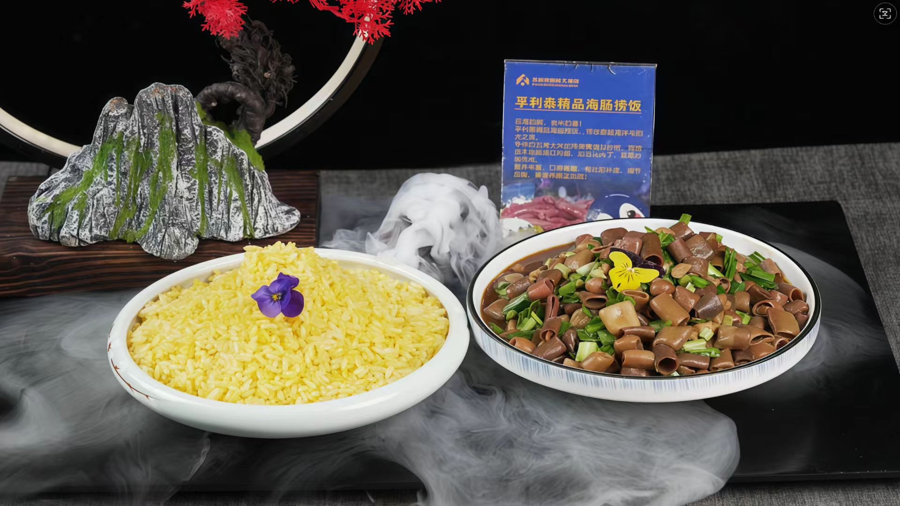
烟台最具代表性的特色美食，渤海湾海肠肉质脆嫩无腥味，快速爆炒后搭配韭菜肉沫，浇饭拌匀鲜到极致。
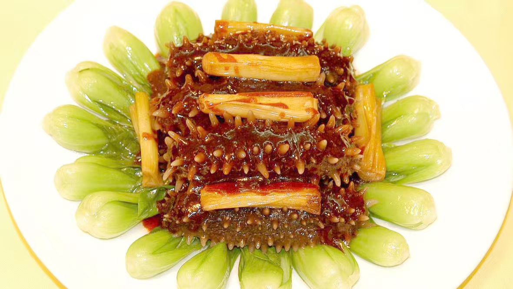
鲁菜经典，烟台海参品质极佳，口感软糯弹牙，葱香浓郁，是高档宴请的必点菜。
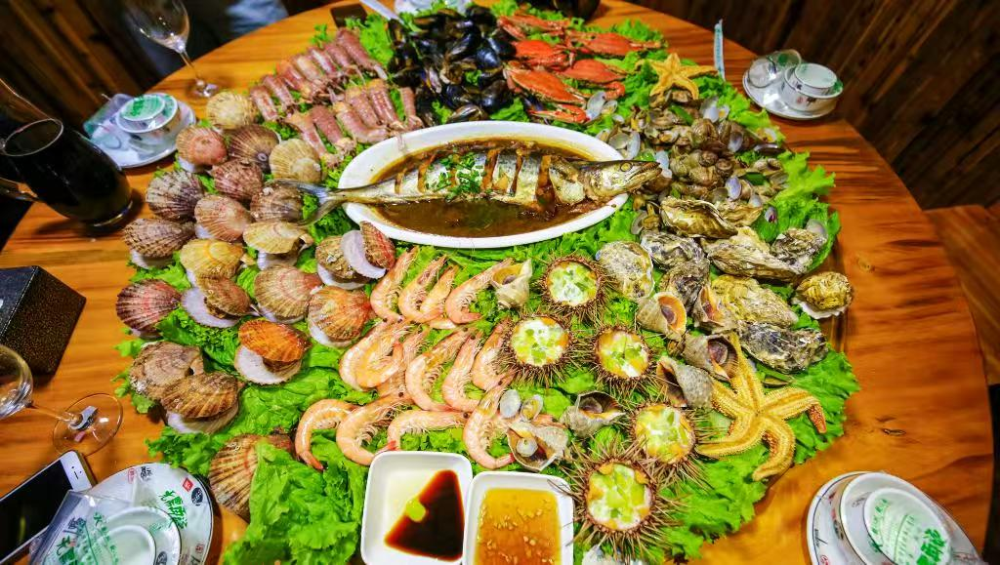
扒虾、螃蟹、扇贝、生蚝等鲜活海鲜清蒸烹制，最大程度保留原汁原味，鲜甜无比。
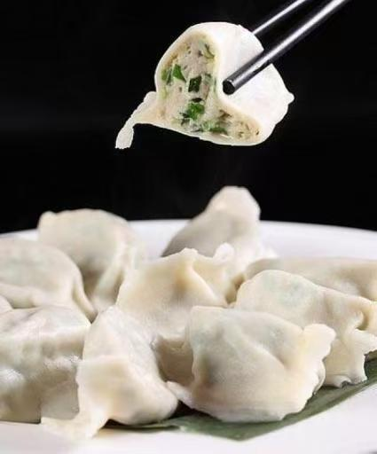
烟台招牌非遗美食，新鲜大鲅鱼手工去刺，加五花肉韭菜调馅，个头大、汤汁足、鲜味浓。
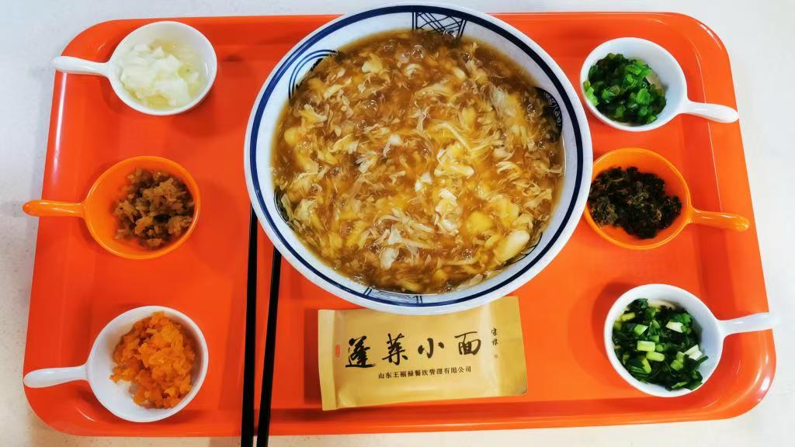
200年历史非遗面食，手工拉制细面搭配浓稠海鲜卤，鲜香味美，是烟台早餐的经典选择。
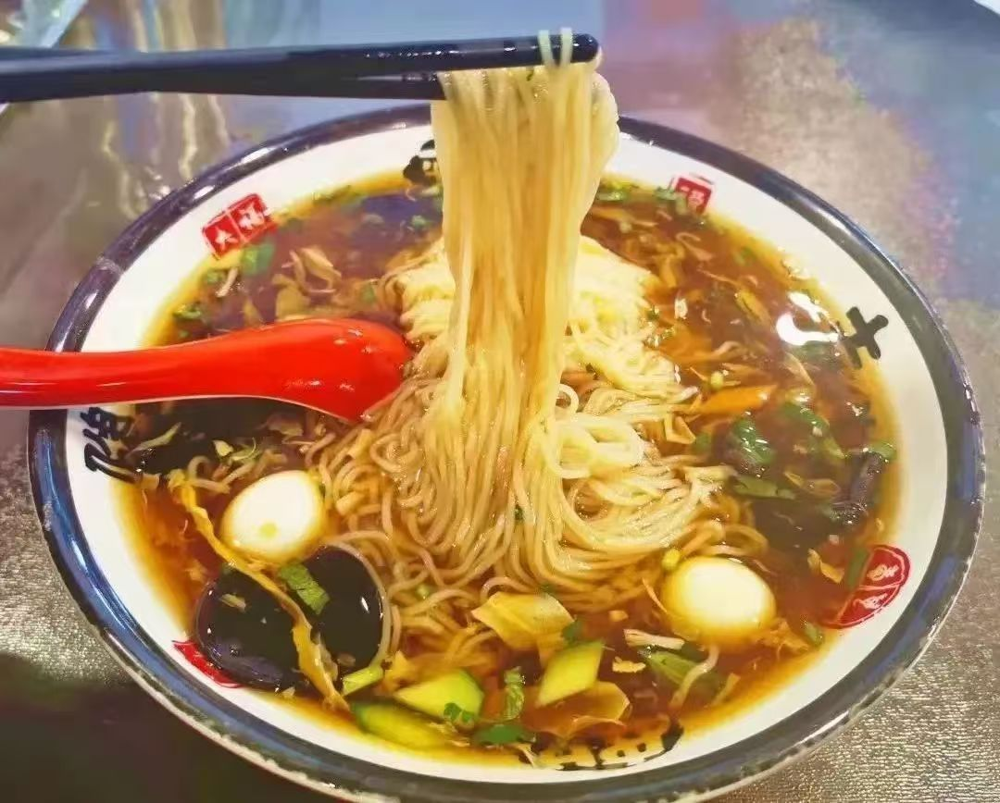
烟台三大风味面食之一，百年工艺拉制，面条筋道爽滑，三鲜卤/炸酱卤各具风味。
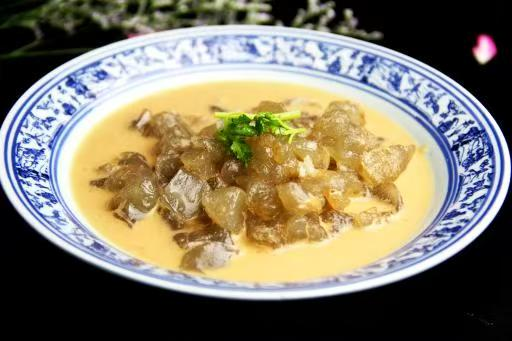
百年街头小吃，地瓜粉煎至外酥里Q，浇芝麻酱汁，三鲜版加虾仁鱿鱼更具风味。
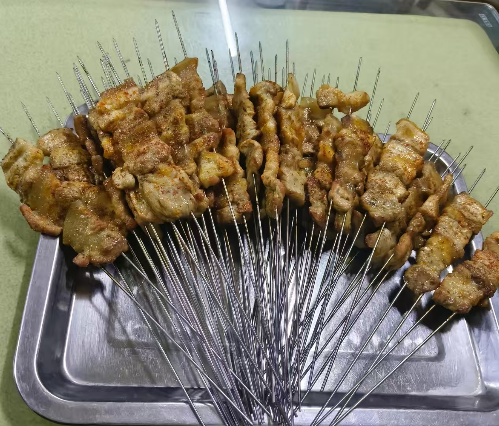
烟台夜市顶流，新鲜食材+独特火候，烤五花肉、烤鱿鱼、烤马步鱼是必点。
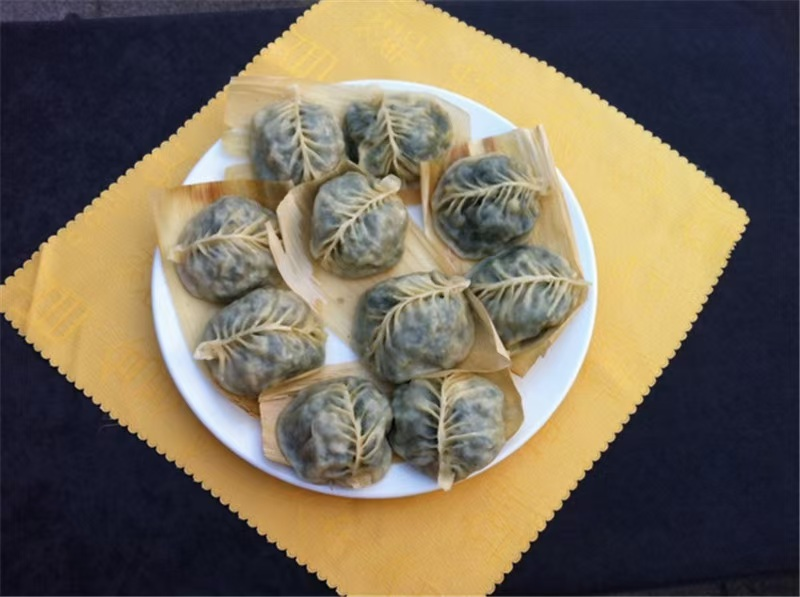
海岛渔民家常美味，海青菜/骆驼毛海菜搭配猪肉虾仁调馅，鲜美又营养。
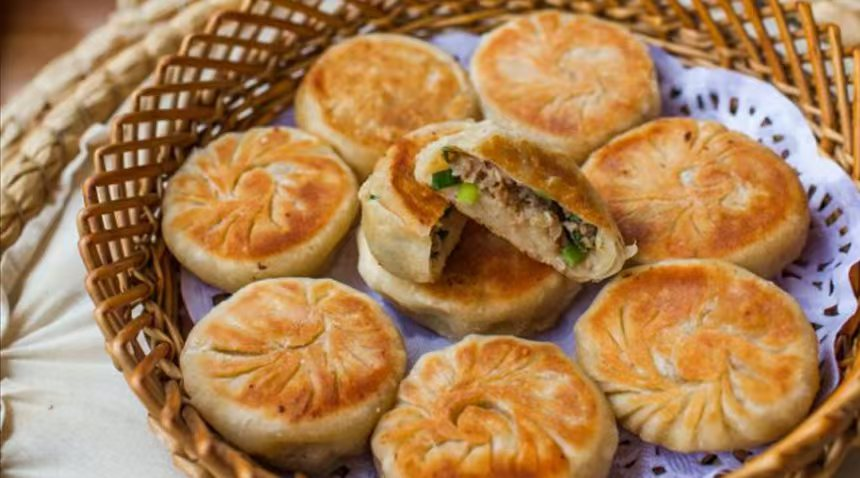
400年历史美食，外酥里嫩，猪肉蔬菜馅鲜香十足，是烟台经典早餐。
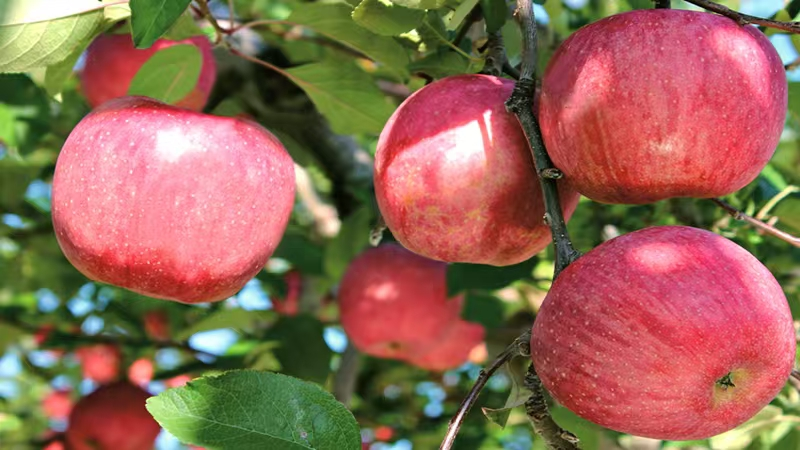
烟台地标水果，红富士苹果果形端正、果肉脆甜、汁水充沛，被誉为"水果皇后"。
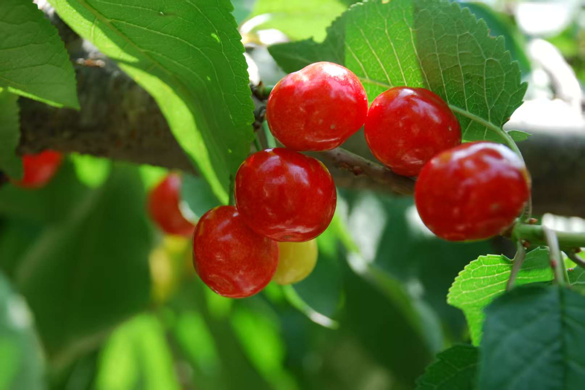
中国樱桃之乡出品，果大肉厚、酸甜适口，红灯/美早/萨米脱等品种各具风味。
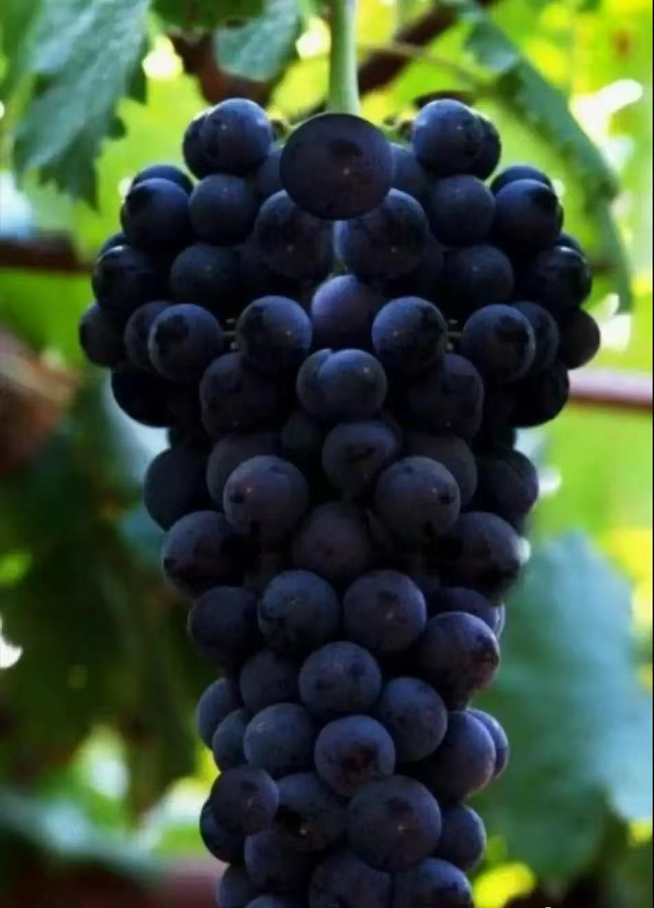
张裕葡萄酒核心原料，蛇龙珠/赤霞珠等品种，果肉饱满、糖分足，鲜食酿酒皆佳。
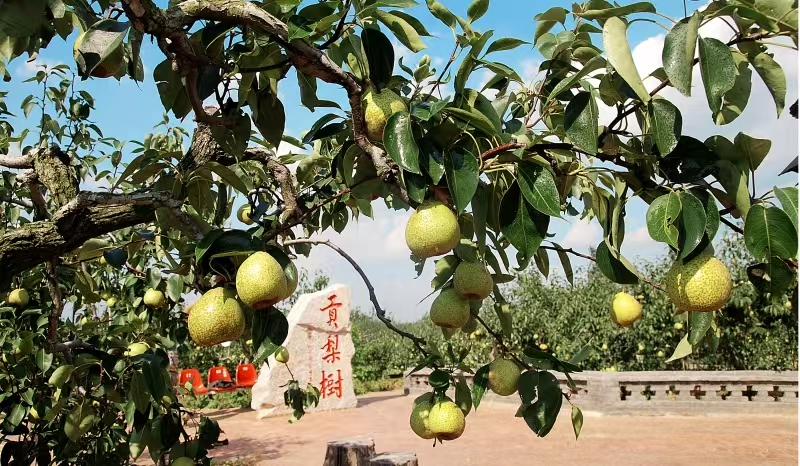
烟台莱阳特产，果肉细腻、汁水丰富、甜中带香，润肺止咳，被誉为"梨中上品"。
烟台最具代表性的特色美食，渤海湾海肠肉质脆嫩无腥味，快速爆炒后搭配韭菜肉沫，浇饭拌匀鲜到极致。
鲁菜经典，烟台海参品质极佳，口感软糯弹牙，葱香浓郁，是高档宴请的必点菜。
扒虾、螃蟹、扇贝、生蚝等鲜活海鲜清蒸烹制，最大程度保留原汁原味，鲜甜无比。
烟台招牌非遗美食，新鲜大鲅鱼手工去刺，加五花肉韭菜调馅，个头大、汤汁足、鲜味浓。
200年历史非遗面食，手工拉制细面搭配浓稠海鲜卤，鲜香味美，是烟台早餐的经典选择。
烟台三大风味面食之一，百年工艺拉制，面条筋道爽滑，三鲜卤/炸酱卤各具风味。
百年街头小吃，地瓜粉煎至外酥里Q，浇芝麻酱汁，三鲜版加虾仁鱿鱼更具风味。
烟台夜市顶流，新鲜食材+独特火候，烤五花肉、烤鱿鱼、烤马步鱼是必点。
海岛渔民家常美味，海青菜/骆驼毛海菜搭配猪肉虾仁调馅，鲜美又营养。
400年历史美食，外酥里嫩，猪肉蔬菜馅鲜香十足，是烟台经典早餐。
烟台地标水果，红富士苹果果形端正、果肉脆甜、汁水充沛，被誉为"水果皇后"。
中国樱桃之乡出品，果大肉厚、酸甜适口，红灯/美早/萨米脱等品种各具风味。
张裕葡萄酒核心原料，蛇龙珠/赤霞珠等品种，果肉饱满、糖分足，鲜食酿酒皆佳。
烟台莱阳特产，果肉细腻、汁水丰富、甜中带香，润肺止咳，被誉为"梨中上品"。
地址：芝罘区烟台山路滨海景区
电话：0535-6228888
本地老牌海鲜大排档，现捞现做，价格亲民，海肠捞饭、清蒸梭子蟹是招牌，夜景绝美。
地址：蓬莱区钟楼北路126号
电话：0535-5648899
百年传承老店，蓬莱小面制作技艺非遗传承，海鲜卤汁浓郁，搭配油条堪称早餐天花板。
地址：牟平区宁海大街88号
电话：0535-4287777
烟台烧烤地标，烤马步鱼、烤鱿鱼、烤五花肉必点，本地人私藏的深夜食堂。
地址：福山区河滨路189号
电话：0535-6339999
鲁菜发源地正宗体验，葱烧海参、糟溜鱼片等经典鲁菜，食材考究，技法地道。